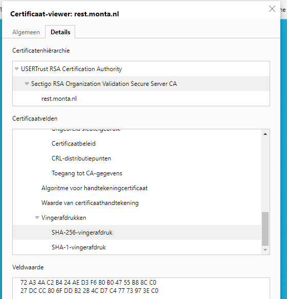
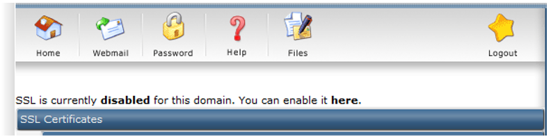

SSL certificaten aanvragen en vervangen
Inhoudsopgave
Inleiding
Voor de beveiliging van websites wordt gebruik gemaakt van
SSL-certificaten.
Hierbij worden een aantal keuzes gemaakt die bij elke aanvraag weer
opnieuw bekeken moeten worden.
Zo min mogelijk wildcard-certificaten.
Organisatie-validatie bij websites waarop gebruikers inloggen.
RSA-2048 bij websites waarop gebruikers inloggen, RSA-4096 voor websites waarop geen gebruikers inloggen.
Geldigheid voor 5 jaar (tenzij de verwachting is dat de website geen 5 jaar meer in de lucht zal blijven)
Intermediate certificaten
Er is iets vreemds aan de hand met de intermediate certificaten van Sectigo.
Deze kun je downloaden bij Xolphin.
Soms echter verschijnt bij de websites het certificaat "Sectigo RSA..." met een andere Fingerprint.

Op de site "https://www.ssl247.com/knowledge-base/detail/sectigo-intermediate-certificates/ka03l0000015lEyAAI/" zijn de intermediates ook te downloaden.
Hierbij heeft "Sectigo RSA..." wel een fingerprint die begint met "72 A3...".
In de BIG-IP is er een certificaat "Cert-Chain-Monta-2022" aangemaakt met een fingerprint die begint me "7F:A4.."
Daarnaast is ook een certificaat aangemaakt die van de site "https://www.ssl247.com/" met de naam "Sectigo-RSA-EV-Bundle".
Helaas is niet te voorspellen welk certificaat een website nodig heeft, dit is een kwestie van uitproberen.
Certificaat aanvraag via Directadmin
CSR aanmaken in DirectAdmin
Voor een website die op een van de TransIP-webservers draait zoals
monta.nl kan het certificaat aangevraagd worden via Directadmin.
Show All Users - Login as montanl -- SSL Certificates.
Dit levert een CSR (Certificate request) op.
Hiermee kan bij Xolphin Control Panel een
certificaat aangevraagd worden.
Certificaat aanvraag afronden in DirectAdmin
De installatie is beschreven in : DirectAdmin - Installatie certificaat (sslcertificaten.nl) en wordt in dit document overgenomen.
Na uitgifte ontvang je het certificaat per e-mail. Je kunt het certificaat ook downloaden in het Control Panel.
Het certificaatbestand heeft dezelfde naam als de domeinnaam waarvoor het is aangevraagd, bijvoorbeeld www_sslcertificaten_nl.crt,
Installatie certificaat
Log in op het DirectAdmin control panel.
Ga naar Advanced Features → SSL Certificates.
Selecteer de onderste radio button in de linker kolom, bij Paste a pre-generated certificate and key. Hiermee wordt straks het eigen certificaat gebruikt, in plaats van het niet vertrouwde standaard certificaat. De Private Key staat al voor ingevuld in het veld Paste a pre-generated certificate and key.
Kopieer het toegezonden certificaat, inclusief begin- en eindregels en alle streepjes, en plak het onder de private key, zodanig dat er geen lege regels tussen zitten. Klik vervolgens op Save.
De melding Certificate and Key Saved verschijnt. Het certificaat is geïnstalleerd. Installeer nu ook de intermediate certificaten.
** **
Installatie root- en intermediate certificaten
Voor de door Xolphin geleverde certificaten moeten ook de root en intermediate certificaten worden geïnstalleerd. Deze worden meestal meegezonden met het certificaat, maar ze kunnen ook worden gedownload vanuit het control panel. Om de root en intermediate certificaten te installeren onder DirectAdmin:
Login op het DirectAdmin control panel.
Ga naar Advanced Features* →* SSL Certificates.
Klik helemaal onderaan de pagina op "Click Here" naast "Click here to paste a CA Root Certificate".
Zet een vinkje naast Use a CA Cert.
Verwijder de huidige inhoud uit het veld.
Kopieer en plak eerst het intermediate certificaat, daaronder het root certificaat. Zorg dat er geen lege regels tussen zitten. Het moet er als volgt uit komen te zien:
In het geval van Montapacking is dit
-----BEGIN CERTIFICATE-----
<gecodeerde data Sectigo_RSA_Domain_Validation_Secure_Server_CA>
-----END CERTIFICATE-----
-----BEGIN CERTIFICATE-----
<gecodeerde data USERTrust_RSA_Certification_Authority>
-----END CERTIFICATE-----Klik op Save.
Inschakelen SSL
Binnen DirectAdmin staat SSL niet standaard aan, zet deze aan. Het inschakelen van SSL staat hieronder beschreven.
Log in op het DirectAdmin control panel.
Ga naar Advanced Features → SSL Certificates.
Bovenin de pagina kun je controleren of SSL al is ingeschakeld en krijg je de mogelijkheid dit in te schakelen indien nodig. Controleer de huidige instelling, is SSL Disabled, klik dan op here in de zin You can enable it here.

- Zet vervolgens een vinkje bij Secure SSL en klik op de knop Save.
- Ga vervolgens wederom naar Advanced Features → SSL Certificates. SSL is nu ingeschakeld.
Daarnaast kan het zo zijn dat er een aparte map voor https wordt
gebruikt. Via het hoofdscherm kan dat worden gecontroleerd door te gaan
naar het item Domain Setup, en hier te kiezen voor het betreffende
domein.
Omdat er meestal geen private_html folder wordt gebruikt moet
onderstaand vinkje ook worden aangezet.
Bij het item voor het instellen van de private_html folder zal moet hier
de symlink worden aangegeven. Houd er rekening mee dat hiermee ook de
fysieke private_html wordt verwijderd, met daarin eventueel aanwezige
gegevens.
Alle stappen voor de installatie van het certificaat zijn voltooid. Zorg dat de certificaatbestanden goed zijn beveiligd, en bewaar een backup van de private key en het certificaat op een veilige plek.
Controleer met de SSLCheck of het
certificaat juist is geinstalleerd en zorg voor een optimale
configuratie van het SSL certificaat met deze tips en
instellingen.
Pas via een SSLCheck zie je of het intermediate en het root-certificaat
in de juiste volgorde staan.
Certificaat aanvragen via IIS
CSR aanvragen in IIS
De CSR-aanvraag kan alleen afgemaakt worden op dezelfde server als waarop de CSR-aanvraag is uitgevoerd.
Je kunt hier bijvoorbeeld de MP-MGMT12 voornemen.
Een certificaat aanvragen via IIS werkt als volgt:
Op server-nivo
Start IIS -> Server Certificates -> Create Certificate Request : vul
alle gegevens in.
Kies bij sites waarop (bijna) geen gebruikers inloggen voor RSA met een
bit-lenght = 4096.
Voor sites waarop wel gebruikers inloggen zoals de montaportal en
gomonta kies van voor 2048.
Dit levert een file op die de gegevens bevat voor de aanvraag bij Xolphin.
Certificaat aanvraag afronden in IIS
Ga naar de server waarop de CSR is aangevraagd en kies binnen IIS voor
Server Certificates -> Complete Certificate Request. In het volgende
scherm verwacht IIS een cer-bestand, er is een crt-bestand, maar dit kan
gewoon gebruikt worden (kies dus alle bestandstypen).
Geef als friendly-name bijvoorbeeld *.montaportal.nl-2020 op, gebruik
hier het jaartal van uitgifte, en kies de Personal Store.
Exporteer vervolgens het certificaat als pfx-file (bijvoorbeeld
Wildcard-MontaReturns-com-2021.pfx), dit kan weer geïmporteerd worden op
andere webservers. Zet hierop het wachtwoord uit Passwordstate ("Xolphin
(SSLcertificaten.nl)" en dan in de notes)
Voeg vervolgens het pfx-bestand toe in Passwordstate bij ("Xolphin
(SSLcertificaten.nl)").
Zorg ervoor dat in "Montapacking\Monta - IT -- General\ Webservers
montapacking.xlsx" tabblad "Certificaten overzicht" bijgehouden wordt op
welke server het certificaat geïnstalleerd is.
Maak vervolgens op websites die via de BIG-IP lopen het certificaat actief zoals beschreven in : https://vragen.monta.nl/Docs/Operations/F5-Bigip/Certificaat-vernieuwen/
Als de website niet via de BIG-IP loopt maak dan het nieuwe certificaat actief op de website door bij de
bindings te verwijzen naar het nieuwe certificaat.
Als je vervolgens op "view" klikt kun je de nieuwe einddatum zien.
Bij het benaderen van de website is het wellicht nodig om de website even te herstarten vanuit IIS voordat de nieuwe einddatum zichtbaar wordt..
Certificaat op een webcluster of een webpool het certificaat
Let er op dat je het certificaat op alle servers importeert en actief maakt (anders merk je pas bij een failover dat de website met een verlopen certificaat werkt).
Verwijder tenslotte alle certificaat-bestanden die tijdens het proces
ergens op schijf opgeslagen zijn.
Het proces is verder ook allemaal beschreven op :
https://www.sslcertificaten.nl/support/IIS/IIS_-_Installatie_certificaat�
Certificaat aanvragen bij Xolphin
Login bij Xolphin Control Panel
Er zijn 3 mogelijkheden:
- Een compleet nieuw certificaat aanvragen.
- Een certificaat opnieuw aanvragen waarvan het abonnement afloopt.
- Een certificaat heruitgeven waarvan het abonnement nog loopt.
In onderstaand voorbeeld is te zien dat het certificaat gekocht is met een abonnement van 5 jaar.
Omdat een certificaat maar 398 dagen geldig is moet er 4 keer een heruitgifte uitgevoerd worden.
Gaat het om een nieuw certificaat of is het abonnement verlopen kies dan
voor.
- Nieuwe aanvraag -- SSL Certificaat.
Kies voor enkel domein of wildcard en dan het volgende product
| Wat | Domein Validatie | Organisatie validatie |
|---|---|---|
| Enkel domein | Sectico PositiveSSL | Sectico InstantSSL |
| Wildcard domein | Sectico PositiveSSL | Sectico PremiumSSL |
Kies 5 jaar tenzij de verwachting is dat de website geen 5 jaar meer in
de lucht zal blijven.
Plak de CSR en voeg gratis domein www / non-www toe indien dit van
toepassing is.
Gebruik als BV : Monta Services B.V.
Gebruik als adres : Weide 30 4206CJ Gorinchem.
Kvk-nummer: [11045086]
Xophin moet vaststellen dat Monta werkelijk de eigenaar is van het
domein.
Hiervoor kan een mail gestuurd worden naar een aantal vaste mailadressen
zoals servicedesk@monta.nl.
Dit kan ook door binnen DNS (TransIP) een CNAME aan te maken met de
gegevens die Xolphin aangeeft. Dit moet dan als volgt in DNS gezet
worden :
_09271eef49af21380ccb1228dc04d2e2.montareturns.com als
_09271eef49af21380ccb1228dc04d2e2 als naam (dus montareturns.com
weghalen).
c613a844368ded0143892563f57f664c.c897436d76182392dd45e6675ba86a8f.comodoca.com.
als waarde (belangrijk dat achter comoda.com een punt staat)..
Er wordt vervolgens een mail met het certificaat gestuurd naar support
als het certificaat klaar is.
Het certificaat kan dan ook gedownload worden vanuit Xolphin Control
Panel.
Download dan het crt-bestand.
Zoals gezegd kan een certificaat maar maximaal 398 dagen geldig zijn.
Daarom moet steeds na een jaar een heruitgifte uitgevoerd worden. Dit werkt ook weer met een
CSR-aanvraag.
Kies voor "Heruitgeven" en plak de CSR in het juiste veld. Je zult zien dat er dan geen kosten in rekening worden gebracht.
Certificaat vervangen extra informatie
Diverse servers
MP-APP01
In IIS website "Passwordstate" alle https-bindings.
MP-APP02
Op de MP-APP02 draait SVN voor Development (De website is te benaderen
via https://svn.montapacking.nl:8443/)
Het certificaat is in te stellen via "Visual SVN Server Manager" op de
mp-app02.

MP-APP03
Op de MP-APP03 draaien applicaties voor Finance.
Op deze server moet het monta.nl-certificaat geplaatst worden.\
Voor Lucanet dient het als volgt in de
Middels de “LucaNet.Server Administrator” kan e.e.a. ingesteld worden.
E:\Lucanet\Software.bin\LucaNet.exe lns://lucanet.monta.nl/goto/LNSA
Master ww in Passwordstate.
Op onderstaande manier is https ingesteld:
Voor Easysystems wordt de default website gebruikt met speciale poorten.
Hiervoor moet op de "normale" manier het certificaat vernieuwd worden:
MP-VOIP01
Certificaat voor webservers is een pfx-bestand.
Via https://www.sslshopper.com/ssl-converter.html dit converteren naar
pem.
Dit pem-bestand in 2 stukken verdelen:
RSA-Private-key in voip.montapacking.nl-key.pem, en Certificate in
voip.montapacking.nl-crt.pem
MP-VOIP01 via SFTP-verbinden en beide bestanden vervangen op onderstaande manier.
- Log met FileZilla aan op de mp-voip01, met root credentials en poort 22 (SSH) (sftp://mp-voip01).
- Ga naar de folder /var/lib/3cxpbx/Bin/nginx/conf/Instance1
- Hernoem de 2 pem-bestanden naar .old
- Plaats de nieuwe pem-bestanden (dezelfde naamgeving aanhouden) in de directory.
- Connect with an SSH client such as PuTTY using SSH root credentials to the phone system host.
- Run commands: a. cd /var/lib/3cxpbx/Bin/nginx/conf/Instance1 b. chown phonesystem:phonesystem voip.montapacking.nl-crt.pem c. chown phonesystem:phonesystem voip.montapacking.nl-key.pem d. service nginx restart
FTP-servers
Op de MP-FTP10/MP-FTP20 en op de DEL-PRTG01 wordt het montaportal-certificaat gebruikt.
Dit moet een wildcard-certificaat zijn omdat anders orders.montaportal.nl niet
vertrouwd wordt.
Of orders.montaportal.nl moet separaat aangevraagd worden.
Binnen Filezilla moet bij de settings - FTP over TLS settings verwezen
worden naar een PEM-bestand met een Private key en een Certificate.
Er wordt nu een bestand gebruikt waar beide in zitten.
Als er een nieuwe montaportal.nl - certificaat wordt uitgerold dient er
ook weer een nieuw PEM-bestand gemaakt te worden.
Download het montaportal-pfx bestand uit Passwordstate.
Het pfx-bestand kan vervolgens met open SSL omgezet worden naar een
PEM-bestand.
In "\\mp-fs102\Software\OpenSSL" staat een textdocument "convert
to PEM" met het commando om van een pfx-bestand een pem-bestand te
maken.
Dit kan ook via de
website : https://www.sslshopper.com/ssl-converter.html
Vervolgens moet het pem-bestand met notepad++ nog aangepast worden.
Plak het intermediate-certificaat en het ca-certificaat uit het oude
pem-bestand onderaan in het nieuwe pem-bestand.
Er moeten overal CRLF's neergezet worden zodat de layout gelijk wordt
aan het huidige pem-bestand. Het is belangrijk dat de certificaten in
het bestand in de juiste volgorde staan.
Zie het huidige pem-bestand. Het kan vervolgens getest worden op een
niet actieve ftp-server met een filezilla-client.
Filezilla mag geen fouten meer geven, behalve dat het een onbekend
certificaat is.
De opbouw van het PEM-bestand is als volgt :
Private key montaportal.nl
Public key montaportal.nl
Public key Sectigo_RSA_Domain_Validation_Secure_Server_CA
Public key USERTrust_RSA_Certification_Authority
friendlyName: le-8554f5a8-f778-4b88-b477-4d2a7ee5436d
Microsoft CSP Name: Microsoft RSA SChannel Cryptographic Provider
BEGIN RSA PRIVATE KEY-----
Private Key (without passphrase)
END RSA PRIVATE KEY-----
friendlyName: *.montaportal.nl-2020
subject=/CN=*.montaportal.nl
issuer=/C=GB/ST=Greater Manchester/L=Salford/O=Sectigo
Limited/CN=Sectigo RSA Domain Validation Secure Server CA
BEGIN CERTIFICATE-----
Certificate (CN=*.montaportal.nl)
END CERTIFICATE-----
subject=/C=GB/ST=Greater Manchester/L=Salford/O=Sectigo
Limited/CN=Sectigo RSA Domain Validation Secure Server CA
issuer=/C=US/ST=New Jersey/L=Jersey City/O=The USERTRUST
Network/CN=USERTrust RSA Certification Authority
BEGIN CERTIFICATE-----
Intermediate (Intermediate CA, Sectigo)
END CERTIFICATE-----
subject=/C=US/ST=New Jersey/L=Jersey City/O=The USERTRUST
Network/CN=USERTrust RSA Certification Authority
issuer=/C=US/ST=New Jersey/L=Jersey City/O=The USERTRUST
Network/CN=USERTrust RSA Certification Authority
BEGIN CERTIFICATE-----
Root (ROOT CA, who signs the Certificate USERTRUST)
END CERTIFICATE-----
MP-PRTG01 en MP-PRTG02
Certificaat vervangen op de BIG-IP.
DEL-PRTG01
Op de DEL-PRTG01 is Filezilla Server geïnstalleerd. Hierop moet het pem-bestand voor wildcard.montaportal.nl vervangen worden net als op de andere FTP-servers.
Er draait ook PRTG op, daarvoor moet het monta.tech-certificaat vervangen worden.
Gebruik hiervoor het freeware tool "PRTG Certificate
Importer" (directory naam Paessler Certificate Importer).
Kies het pfx-bestand op schijf.
Onder water wordt dan het volgende uitgevoerd :
De volgende 3 bestanden worden geplaatst in : "c:\program
files(x86)\PRTG Network Monitor\Cert"
-prtg.crt: This is the certificate for your PRTG core server. It must be
stored in PEM-encoded format.
-prtg.key: This is the private key that matches your server certificate.
It must be stored in PEM-encoded format and must not be encrypted. Make
sure that you provide this file in decrypted format.
The best way to check this is to open the file in a text editor. If you
find a line containing the word ENCRYPTED, the file still needs to be
decrypted before you can use it with PRTG. Decrypt it using an SSL tool
and your key password.
-root.pem: This is the public root certificate of your certificate's
issuer. It must be stored in PEM-encoded format and must contain all
necessary root certificates of your issuer in one file.\
Handleiding zie : PRTG Certificate Importer (paessler.com).\
Als je dit handmatig zou willen doen dan kun je op de volgende manier de 3 bestanden maken:
Middels het commando "z:\openssl\bin\openssl pkcs12 -in
z:\openssl\cert\wildcard-monta-tech-2022.pfx -out
z:\openssl\cert\wildcard-monta.tech-2022.pem -nodes" is de pfx
omgezet naar een pem-bestand.
Hier is vervolgens het deel van het certificate en de ca uit een pem-bestand van de montaportal onder
geplakt.
Werkplek-omgeving
MP-RDS01, RP-RDS02 en MP-RDSGW01 Website : Default (nodig voor inlog van
buiten af).
MP-RDSxx Deployment options, voor werkplek.montapacking.nl
Op onderstaande is het certificaat aan te passen:

Sectigo Code Signing
SSL certificaten hebben een geldigheid van maximaal 398 dagen, iets meer
dan een jaar.
Code Signing certificaten kunnen nog steeds met een geldigheid van 3
jaar aangevraagd worden.
Zie verder handleiding "Aanvragen Code Signing Certificaat of E-mail Certificaat" op de website van Xolphin.
Xolphin Certificate Tool (digitalehandtekeningen.nl)
Installeer hierbij lokaal het tool "Xolphin Certificate Tools".

 Er wordt een mail verstuurd nadat er een kvk-controle is uitgevoerd.
Er wordt een mail verstuurd nadat er een kvk-controle is uitgevoerd.
Met deze mail kan het proces in "Xolphin Certificate Tools" afgemaakt worden waarna en een pfx of pem geëxporteerd kan worden.
Gebruik Internet explorer.
De collectie moet afgemaakt worden op de computer waarop de aanvraag is gedaan.
Hiermee wordt het crt-bestand toegevoegd aan de private key.
Hierna is te zien dat er een nieuw certificaat is met een nieuwe expiration date.
Dit kan geëxporteerd worden zowel als PFX, als (PEM) Encoded CRT / Key.
Export als (PEM) Encoded CRT / Key levert 3 bestanden op.
xxxx.key met de private key
xxxx.crt met de publieke key
xxxx.cachain.crt met het intermediate en het root-certificaat.
Firewalls
De firewalls gebruiken het wildcard-montapacking.nl-certificaat voor de Webinterface.
Sophos
Ga op de Sophos naar Remote Access \ Certificate Management \ en creëer een nieuw Certificaat en kies voor Upload.
Ga vervolgens naar "Management \ Webadmin Settings" tabblad "HTTPS Certificate" en verwijs naar het nieuwe certificaat.
Op de dc-rou01 wordt de user portal gebruikt voor de vpn. Hierbij dient ook een certificaat gewijzoigd te worden.
Fortinet
Fortimanager en Fortianalyzer
Ga bij de System Settings naar de Certificates \ local Certificates en importeer een nieuwe versie van het certificaat.
Kies bij de admin settings het nieuwe certificaat.
Fortigates
Open de betreffende Fortigate firewall en ga naar System -> Certificates -> Create/Import.

Kies hier voor de optie Certificate.
Vervolgens voor de optie Import Certificate.
Type: PKCS #12 Certificate.
Certificate with key file: Upload het .pfx bestand via +Upload.
Password: Zie PasswordState (Xolphin)
Certificate name: Wildcard-montapacking-nl-JAAR
Klik vervolgens op Create.

Ga vervolgens naar System -> Settings.
Pas hier het HTTPS server certificate aan naar het nieuwe certificaat en klik op Apply.
Name Hero omgeving (VERVALLEN)
Sommige websites hebben gedraaid bij Name Hero (zie Passwordstate).
In 2023 zijn deze websites gemigreed naar Directadmin servers bij TransIP.
Op deze websites zijn aparte bestanden nodig voor :
private key
publieke key
ca-chain-bundle
Hiervoor dient een PEM-bestand gemaakt te worden waaruit de bovenstaande losse bestanden gehaald kunnen worden.
Dit gaat op dezelfde manier als bij de FTP-server en als Sectigo Code Signing .
Download bijvoorbeeld het monta-pfx bestand uit Passwordstate.
Het pfx-bestand kan vervolgens met open SSL omgezet worden naar een
PEM-bestand.
In "\\mp-fs102\Software\OpenSSL" staat een textdocument "convert
to PEM" met het commando om van een pfx-bestand een pem-bestand te
maken.\